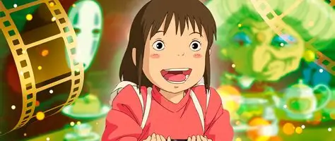

Chihiro Ogino
The ten-year-old human girl and the story’s main heroine. She starts off frightened, sulky, and reluctant, but when trapped in the spirit world, she grows into a brave, kind, and resourceful young person. Renamed “Sen” by Yubaba, she works at the bathhouse to save her parents and discovers her own inner strength while keeping her kindness and integrity intact.